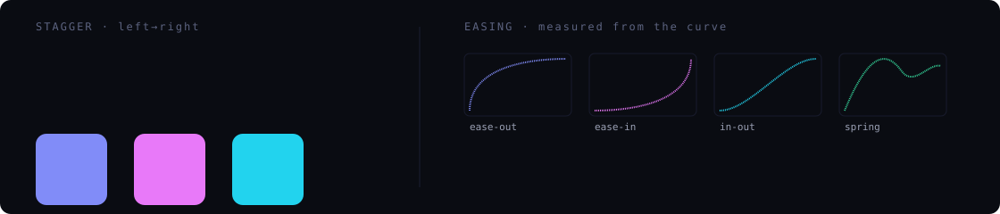

See the motion, recreate the animation. Drop a screen recording — get working animation code.
motiscope reads the motion out of a recording the way a scope reads a waveform — then rebuilds it as code. Timing is measured off the curve; magnitudes are read off a few frames.
A dense per-frame motion-energy curve at native fps drives timing, easing, holds, fades, stagger and loop detection. Pure numbers, zero image tokens.
A small curated set of PNG keyframes (~24–48) the model actually looks at to estimate which elements move and by how much — flagged as estimates.

A screenshot has no time axis. motiscope measures the time — a dense motion-energy curve, a percentile-anchored hold threshold, and easing recovered by integrating speed — and leaves perception to the model.
Small buttons & cards on a big page register as real motion instead of washing out in a whole-frame average.
draft / balanced / detailed frame budgets, plus --start/--end windows and --fps to catch fast content.
Long/complex clips split into beats; frames follow the motion (allocated by magnitude) and skip dead holds.
Autocorrelation finds repeats and reports the period — with loop-vs-yoyo guidance for recreation.
A motion grid infers sequencing direction and per-element timing (e.g. left-to-right, ~80ms each).
GSAP (defers to the official GSAP skills), CSS/WAAPI, Framer Motion, and Lottie/SVG.
These are the kind of motions motiscope reads and rebuilds — a staggered entrance and easing curves, drawn as scope channels.
